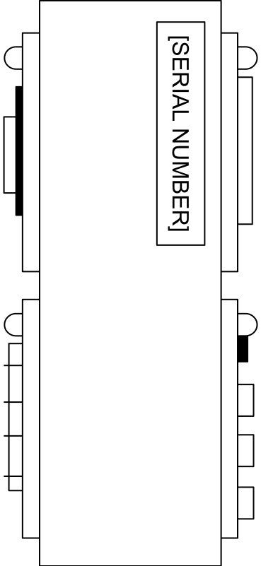
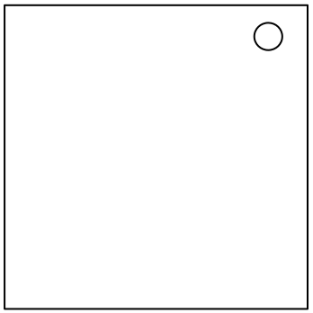
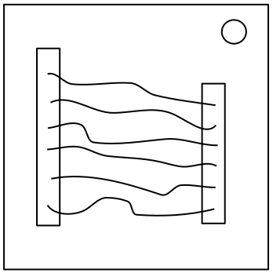
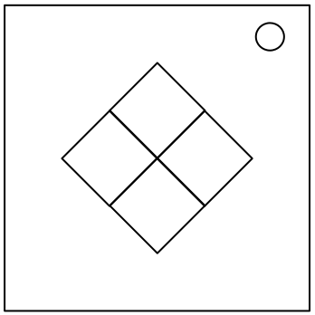
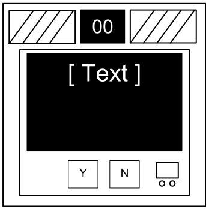

Keep Talking and Nobody Explodes v. 1
Introduktion
Välkommen till en farlig och utmanande värld av bombdesarmering.
Studera denna manual väl; du är experten. Bland dessa sidor finner du
allt man behöver veta för att desarmera även den lömskaste av bomber.
Och kom ihåg: Ett misstag och allt är över!
Keep Talking and Nobody Explodes v. 1
Desarmera bomber
Desarmera bomber
En bomb kommer att explodera när dess nedräkningstimer når 0:00 eller när för många missar (strikes) har begåtts. Det enda sättet att desarmera en bomb är att stänga av alla dess moduler innan nedräkningstimern löpt ut.
Exempelbomb
 Framsida |  Sida |
Moduler
Varje bomb kommer att innehålla upp till 11 moduler som måste stängas ned. Varje modul är självständig och kan stängas ned i valfri ordning.
Instruktioner för att stänga ned moduler finns i Sektion 1. "Känsliga" moduler utgör specialfall och beskrivs under Sektion 2.
Missar
Missindikatorn

När Desarmeraren gör ett misstag kommer bomben att registrera en miss som kommer att synas på indikatorn ovanför nedräkningstimern. Bomber med en missindikator kommer att explodera på tredje missen. Timern kommer att börja räkna ned fortare när en miss har registrerats.
Om det inte finns en missindikator ovanför nedräkningstimern kommer bomben explodera efter första missen, utan att lämna plats för misstag.
Samla information
Vissa instruktioner kräver specifik information om bomben, som till exempel serienumret. Denna typ av information kan vanligtvis finnas på ovansidan, botten eller sidorna på bombskalet. Se Bilaga A, B och C för identifieringsinstruktioner som är värdefulla vid avstängning av vissa moduler.
Keep Talking and Nobody Explodes v. 1
Sektion 1: Moduler

Sektion 1: Moduler
Moduler identifieras med hjälp av en LED-lampa på dess övre högra hörn. När denna lyser grönt har modulen stängts av.
Alla moduler måste stängas av för att desarmera bomben.
Keep Talking and Nobody Explodes v. 1
Kablar

Gällande kablar
Kablar är elektronikens livsnerver! Eller, vänta- elektriciteten är dess livsnerver. Kablar är snarare dess artärer. Eller venerna? Spelar roll…
- En kabelmodul kan ha 3-6 kablar på sig.
- Bara den enda rätta kabeln måste kapas för att avväpna modulen.
- Kabelordningen börjar med den första översta.
| 3 kablar: Om det inte finns några röda kablar, kapa den andra kabeln. Om sista kabeln är vit, kapa den sista kabeln. Om det finns fler än en blå kabel, kapa den sista blå kabeln. Annars kapa den sista kabeln. |
| 4 kablar: Om det finns fler än en röd kabel och sista siffran i serienumret är udda, kapa den sista röda kabeln. Om den sista kabeln är gul och det finns inga röda kablar, kapa den första kabeln. Om det finns endast en blå kabel, kapa första kabeln. Om det finns fler än en gul kabel, kapa sista kabeln. Kapa annars den andra kabeln. |
| 5 kablar: Om den sista kabeln är svart och sista siffran i serienumret är udda, kapa den fjärde kabeln. Om det finns endast en röd kabel och det finns fler än en gul kabel, kapa den första kabeln. Om det inte finns några svarta kablar, kapa den andra kabeln. Kapa annars den första kabeln. |
| 6 kablar: Om det inte finns några gula kablar och den sista siffran i serienumret är udda, kapa den tredje kabeln. Om det finns endast en gul kabel och det finns fler än en vit kabel, kapa den fjärde kabeln. Om det inte finns några röda kablar, kapa den sista kabeln. Kapa annars den fjärde kabeln. |
Keep Talking and Nobody Explodes v. 1
Knappen
Gällande knappar
Du kanske tycker att en knapp som säger åt dig att trycka på den är ganska rättfram. Det är precis den sortens tankar som får folk att explodera.
Se Bilaga A för hänvisningar till indikatoridentifiering.
Se Bilaga B för hänvisningar till batteriidentifiering.
Följ dessa regler i den ordning de är skrivna. Utför den första åtgärd som gäller:
- Om knappen är blå och det står "Abort" på den, håll ned knappen och läs sedan "Att släppa en nedtryckt knapp".
- Om det finns fler än 1 batteri på bomben och det står "Detonate" på knappen, tryck och släpp den omedelbart.
- Om knappen är vit och det finns en lysande indikator med etiketten "CAR", håll ned knappen och läs sedan "Att släppa en nedtryckt knapp".
- Om det finns fler än 2 batterier på bomben och det finns en lysande indikator med etiketten "FRK", tryck och släpp knappen omedelbart.
- Om knappen är gul, håll ned knappen och läs sedan "Att släppa en nedtryckt knapp".
- Om knappen är röd och det står "Hold" på den, tryck och släpp knappen omedelbart.
- Om inget av ovan gäller, håll knappen och läs sedan "Att släppa en nedtryckt knapp".
Att släppa en nedtryckt knapp
När du börjar hålla ned knappen kommer en färgad remsa att lysa upp på modulens högra sida. Beroende på vilken färg den är måste du släppa knappen under en specifik tidpunkt:
- Blå remsa: släpp när nedräkningstimern visar en 4:a var som helst.
- Vit remsa: släpp när nedräkningsstimern visar en 1:a var som helst.
- Gul remsa: släpp när nedräkningstimern har en 5:a var som helst.
- Alla andra färger: släpp när nedräkningstimern visar en 1:a var som helst.
Keep Talking and Nobody Explodes v. 1
Knappsatser

Gällande knappsatser
Jag vet inte vad dessa symboler innebär, men jag misstänker att de har något att göra med det ockulta.
- Endast en kolumn nedan har alla fyra symboler från knappsatsen.
- Tryck på de fyra knapparna i den ordning som deras symboler dyker upp i den kolumnen, från toppen till botten.
 |  |  |  |  | | |||||
|  |  |  | | ||||||
 |  |  | |  | ||||||
 | |  |  |  | ||||||
|  |  | | | | |||||
 | | |  |  |  | |||||
| | |  |
Keep Talking and Nobody Explodes v. 1
Simon Says

Gällande Simon Says
Det här är precis som den klassiska elektroniska leksaken med samma namn, där man måste trycka på färger i ordningen som de dyker upp. Förutom att det här förmodligen är en billig kopia.
- En av de fyra färgade knapparna kommer att blinka till.
- Genom att använda tabellen nedan, tryck på knappen med motsvarande färg.
- Den första knappen kommer att blinka till, följt av en annan. Upprepa denna sekvens i följd genom att kartlägga färgerna med tabellen.
- Sekvensen kommer att utökas med ytterligare ett steg för varje korrekt knapptryckning tills dess att modulen stängs av.
Om serienumret innehåller en vokal:
| Röd blinkn. | Blå blinkn. | Grön blinkn. | Gul blinkn. | ||
|---|---|---|---|---|---|
| Knapp att trycka: | Ingen miss | Blå | Röd | Gul | Grön | 1 miss | Gul | Grön | Blå | Röd | 2 missar | Grön | Röd | Gul | Blå |
Om serienumret inte innehåller en vokal:
| Röd blinkn. | Blå blinkn. | Grön blinkn. | Gul blinkn. | ||
|---|---|---|---|---|---|
| Knapp att trycka: | Ingen miss | Blå | Gul | Grön | Röd | 1 miss | Röd | Blå | Gul | Grön | 2 missar | Gul | Grön | Blå | Röd |
Keep Talking and Nobody Explodes v. 1
Vilken Kommer Först

Gällande Vilken Kommer Först
Den här manicken är något av en komedisketch, vilket skulle ha varit roligt om den inte vore kopplad till en bomb. Jag ska hålla mig kort, eftersom ord bara försvårar saken.
- Läs på displayen och använd steg 1 för att avgöra vilken knapptext som skall avläsas.
- Med denna knapptext, använd steg 2 för att avgöra vilken knapp som skall tryckas.
- Upprepa tills dess att modulen stängs av.
Steg 1:
Utgå från displayen, läs sedan knappen enligt tabell och gå vidare till steg 2:
|
|
|
|
|
| ||||||||||||||||||||||||||||||||||||||||||||||||
|
|
|
|
| |||||||||||||||||||||||||||||||||||||||||||||||||
|
|
|
|
|
| ||||||||||||||||||||||||||||||||||||||||||||||||
|
|
|
|
|
| ||||||||||||||||||||||||||||||||||||||||||||||||
|
|
|
| ||||||||||||||||||||||||||||||||||||||||||||||||||
Keep Talking and Nobody Explodes v. 1
Vilken Kommer Först
Steg 2:
Utgå från knapptexten från steg 1, sedan tryck på knappen som dyker upp först i den motsvarande listan:
| "READY": | YES, OKAY, WHAT, MIDDLE, LEFT, PRESS, RIGHT, BLANK, READY, NO, FIRST, UHHH, NOTHING, WAIT |
|---|---|
| "FIRST": | LEFT, OKAY, YES, MIDDLE, NO, RIGHT, NOTHING, UHHH, WAIT, READY, BLANK, WHAT, PRESS, FIRST |
| "NO": | BLANK, UHHH, WAIT, FIRST, WHAT, READY, RIGHT, YES, NOTHING, LEFT, PRESS, OKAY, NO, MIDDLE |
| "BLANK": | WAIT, RIGHT, OKAY, MIDDLE, BLANK, PRESS, READY, NOTHING, NO, WHAT, LEFT, UHHH, YES, FIRST |
| "NOTHING": | UHHH, RIGHT, OKAY, MIDDLE, YES, BLANK, NO, PRESS, LEFT, WHAT, WAIT, FIRST, NOTHING, READY |
| "YES": | OKAY, RIGHT, UHHH, MIDDLE, FIRST, WHAT, PRESS, READY, NOTHING, YES, LEFT, BLANK, NO, WAIT |
| "WHAT": | UHHH, WHAT, LEFT, NOTHING, READY, BLANK, MIDDLE, NO, OKAY, FIRST, WAIT, YES, PRESS, RIGHT |
| "UHHH": | READY, NOTHING, LEFT, WHAT, OKAY, YES, RIGHT, NO, PRESS, BLANK, UHHH, MIDDLE, WAIT, FIRST |
| "LEFT": | RIGHT, LEFT, FIRST, NO, MIDDLE, YES, BLANK, WHAT, UHHH, WAIT, PRESS, READY, OKAY, NOTHING |
| "RIGHT": | YES, NOTHING, READY, PRESS, NO, WAIT, WHAT, RIGHT, MIDDLE, LEFT, UHHH, BLANK, OKAY, FIRST |
| "MIDDLE": | BLANK, READY, OKAY, WHAT, NOTHING, PRESS, NO, WAIT, LEFT, MIDDLE, RIGHT, FIRST, UHHH, YES |
| "OKAY": | MIDDLE, NO, FIRST, YES, UHHH, NOTHING, WAIT, OKAY, LEFT, READY, BLANK, PRESS, WHAT, RIGHT |
| "WAIT": | UHHH, NO, BLANK, OKAY, YES, LEFT, FIRST, PRESS, WHAT, WAIT, NOTHING, READY, RIGHT, MIDDLE |
| "PRESS": | RIGHT, MIDDLE, YES, READY, PRESS, OKAY, NOTHING, UHHH, BLANK, LEFT, FIRST, WHAT, NO, WAIT |
| "YOU": | SURE, YOU ARE, YOUR, YOU'RE, NEXT, UH HUH, UR, HOLD, WHAT?, YOU, UH UH, LIKE, DONE, U |
| "YOU ARE": | YOUR, NEXT, LIKE, UH HUH, WHAT?, DONE, UH UH, HOLD, YOU, U, YOU'RE, SURE, UR, YOU ARE |
| "YOUR": | UH UH, YOU ARE, UH HUH, YOUR, NEXT, UR, SURE, U, YOU'RE, YOU, WHAT?, HOLD, LIKE, DONE |
| "YOU'RE": | YOU, YOU'RE, UR, NEXT, UH UH, YOU ARE, U, YOUR, WHAT?, UH HUH, SURE, DONE, LIKE, HOLD |
| "UR": | DONE, U, UR, UH HUH, WHAT?, SURE, YOUR, HOLD, YOU'RE, LIKE, NEXT, UH UH, YOU ARE, YOU |
| "U": | UH HUH, SURE, NEXT, WHAT?, YOU'RE, UR, UH UH, DONE, U, YOU, LIKE, HOLD, YOU ARE, YOUR |
| "UH HUH": | UH HUH, YOUR, YOU ARE, YOU, DONE, HOLD, UH UH, NEXT, SURE, LIKE, YOU'RE, UR, U, WHAT? |
| "UH UH": | UR, U, YOU ARE, YOU'RE, NEXT, UH UH, DONE, YOU, UH HUH, LIKE, YOUR, SURE, HOLD, WHAT? |
| "WHAT?": | YOU, HOLD, YOU'RE, YOUR, U, DONE, UH UH, LIKE, YOU ARE, UH HUH, UR, NEXT, WHAT?, SURE |
| "DONE": | SURE, UH HUH, NEXT, WHAT?, YOUR, UR, YOU'RE, HOLD, LIKE, YOU, U, YOU ARE, UH UH, DONE |
| "NEXT": | WHAT?, UH HUH, UH UH, YOUR, HOLD, SURE, NEXT, LIKE, DONE, YOU ARE, UR, YOU'RE, U, YOU |
| "HOLD": | YOU ARE, U, DONE, UH UH, YOU, UR, SURE, WHAT?, YOU'RE, NEXT, HOLD, UH HUH, YOUR, LIKE |
| "SURE": | YOU ARE, DONE, LIKE, YOU'RE, YOU, HOLD, UH HUH, UR, SURE, U, WHAT?, NEXT, YOUR, UH UH |
| "LIKE": | YOU'RE, NEXT, U, UR, HOLD, DONE, UH UH, WHAT?, UH HUH, YOU, LIKE, SURE, YOU ARE, YOUR |
Keep Talking and Nobody Explodes v. 1
Minne

Gällande minne
Minne är en ömtålig sak, men det är även allt annat när en bomb smäller, så var uppmärksam!
- Tryck på den rätta knappen för att gå vidare till nästa nivå på modulen. Klara av samtliga nivåer för att stänga av modulen.
- Felaktig knapptryckning startar om modulen på nivå 1.
- Knapparnas positioner är ordnade från vänster till höger.
Nivå 1:
Display visar 1: tryck på knappen med andra positionen.
Display visar 2: tryck på knappen med andra positionen.
Display visar 3: tryck på knappen med tredje positionen.
Display visar 4: tryck på knappen med fjärde positionen.
Nivå 2:
Display visar 1: tryck på knappen märkt 4.
Display visar 2: tryck på knappen med samma position som på den under nivå 1.
Display visar 3: tryck på knappen med den första positionen.
Display visar 4: tryck på knappen med samma position som på den från nivå 1.
Nivå 3:
Display visar 1: tryck på knappen med samma märkning som på den under nivå 2.
Display visar 2: tryck på knappen med samma märkning som på den under nivå 1.
Display visar 3: tryck på knappen med den tredje positionen.
Display visar 4: tryck på knappen märkt 4.
Nivå 4:
Display visar 1: tryck på knappen med samma position som på den under nivå 1.
Display visar 2: tryck på knappen med den första positionen.
Display visar 3: tryck på knappen med samma position som på den under nivå 2.
Display visar 4: tryck på knappen med samma position som på den under nivå 2.
Nivå 5:
Display visar 1: tryck på knappen med samma märkning som på den under nivå 1.
Display visar 2: tryck på knappen med samma märkning som på den under nivå 2.
Display visar 3: tryck på knappen med samma märkning som på den under nivå 4.
Display visar 4: tryck på knappen med samma märkning som på den under nivå 3.
Keep Talking and Nobody Explodes v. 1
Morsekod

Gällande morsekod
En antikverad form av sjökommunikation? Vad kommer härnäst? Det är åtminstone äkta morsekod, så var uppmärksam och du kanske lär dig något.
- Tolka signalen från det blinkande ljuset med hjälp av morsekodstabellen för att stava till ett av orden i tabellen till höger.
- Signalen kommer i en slinga, med en lång paus mellan upprepningarna.
- När ordet är identifierat, ställ in motsvarande frekvens och tryck på sändningsknappen (TX).
| Ord: | Svara på frekvens: |
|---|---|
| shell | 3.505 MHz |
| halls | 3.515 MHz |
| slick | 3.522 MHz |
| trick | 3.532 MHz |
| boxes | 3.535 MHz |
| leaks | 3.542 MHz |
| strobe | 3.545 MHz |
| bistro | 3.552 MHz |
| flick | 3.555 MHz |
| bombs | 3.565 MHz |
| break | 3.572 MHz |
| brick | 3.575 MHz |
| steak | 3.582 MHz |
| sting | 3.592 MHz |
| vector | 3.595 MHz |
| beats | 3.600 MHz |
Keep Talking and Nobody Explodes v. 1
Komplicerade Kablar

Gällande komplicerade kablar
Dessa kablar är inte som de andra. De har ränder! Det gör dem helt annorlunda. Den goda nyheten är att vi har hittat en koncis uppsättning instruktioner på hur man hanterar dem! Kanske för koncisa...
- Titta på varje kabel: det finns en LED-lampa ovanför dem och en plats för en "★"-symbol under dem.
- För varje kabel-/LED-/symbol-kombination, använd Venndiagrammet nedan för att avgöra huruvida att kapa eller inte kapa kabeln.
- Varje kabel kan vara randig med flera färger.
| Bokstav | Instruktion |
|---|---|
| C | Kapa kabeln |
| D | Kapa inte kabeln |
| S | Kapa kabeln om den sista siffran i serienumret är jämn |
| P | Kapa kabeln om bomben har en parallelport |
| B | Kapa kabeln om bomben har två eller fler batterier |
Se Bilaga B för hänvisningar till batteriidentifiering.
Se Bilaga C för hänvisningar till portidentifiering.
Keep Talking and Nobody Explodes v. 1
Kabelsekvenser
Gällande kabelsekvenser
Det är svårt att säga hur denna mekanism fungerar. Ingenjörskonsten är rätt imponerande, men det borde ha funnits ett enklare sätt att hantera nio kablar.
- På denna modul finns det flera paneler med kablar på sig, men endast en panel är synlig åt gången. Byt till nästa panel genom att trycka på ned-knappen och föregående genom att trycka på upp-knappen.
- Byt inte till nästa panel förrän du är säker på att du har kapat alla nödvändiga kablar på den aktuella panelen.
- Kapa kablarna enligt tabellen nedan. Kablarnas förekomster är kumulativa över alla panelerna på modulen.
| Förekomst av röda kablar | |
|---|---|
| Förekomst av kabel | Kapa om kopplad till: |
| Första röda förekomsten | C |
| Andra röda förekomsten | B |
| Tredje röda förekomsten | A |
| Fjärde röda förekomsten | A eller C |
| Femte röda förekomsten | B |
| Sjätte röda förekomsten | A eller C |
| Sjunde röda förekomsten | A, B eller C |
| Åttonde röda förekomsten | A eller B |
| Nionde röda förekomsten | B |
| Förekomst av blå kablar | |
|---|---|
| Förekomst av kabel | Kapa om kopplad till: |
| Första blå förekomsten | B |
| Andra blå förekomsten | A eller C |
| Tredje blå förekomsten | B |
| Fjärde blå förekomsten | A |
| Femte blå förekomsten | B |
| Sjätte blå förekomsten | B eller C |
| Sjunde blå förekomsten | C |
| Åttonde blå förekomsten | A eller C |
| Nionde blå förekomsten | A |
| Förekomst av svarta kablar | |
|---|---|
| Förekomst av kabel | Kapa omkopplad till: |
| Första svarta förekomsten | A, B eller C |
| Andra svarta förekomsten | A eller C |
| Tredje svarta förekomsten | B |
| Fjärde svarta förekomsten | A eller C |
| Femte svarta förekomsten | B |
| Sjätte svarta förekomsten | B eller C |
| Sjunde svarta förekomsten | A eller B |
| Åttonde svarta förekomsten | C |
| Nionde svarta förekomsten | C |
Keep Talking and Nobody Explodes v. 1
Labyrinter
Gällande labyrinter
Det här verkar vara någon sorts labyrint, förmodligen stulen från någon restaurangs brickunderlägg.
- Hitta labyrinten med matchande cirkelmarkeringar.
- Desarmeraren måste navigera det vita ljuset till den röda triangeln med hjälp av pilknapparna.
- Varning: Korsta inte linjerna som syns i labyrinten. Dessa är osynliga på bomben.


Keep Talking and Nobody Explodes v. 1
Lösenord
Gällande lösenord
Som tur är uppfyller inte detta lösenord den statliga standarden på säkerhetskrav: 22 tecken, blandade versaler och gemener, slumpmässiga siffror och utan palindromer över längd 3.
- Knapparna över och under varje bokstav bläddrar bland bokstäverna för den positionen.
- Endast en kombination av de tillgängliga bokstäverna kommer att matcha ett lösenord nedan.
- Tryck på "Sänd"-knappen (Submit) när det rätta ordet har matats in.
| about | after | again | below | could |
| every | first | found | great | house |
| large | learn | never | other | place |
| plant | point | right | small | sound |
| spell | still | study | their | there |
| these | thing | think | three | water |
| where | which | world | would | write |
Keep Talking and Nobody Explodes v. 1
Sektion 2: Känsliga Moduler

Sektion 2: Känsliga Moduler
Känsliga moduler går inte att stänga av, men utgör en återkommande fara.
Känsliga moduler identifieras med hjälp av en liten 2‑siffrig timer som finns längst upp i mitten av modulen. Då man interagerar med bomben kan det hända att de blir aktiverade. När dessa känsliga moduler blivit aktiverade måste man hålla koll på dem regelbundet innan deras timer löpt ut för att undvika att erhålla en miss.
Var uppmärksam: känsliga moduler kan när som helst återaktiveras.
Keep Talking and Nobody Explodes v. 1
Tryckutsläpp

Gällande tryckutsläpp
Datorhackande är hårt arbete! Tja, i alla fall vanligtvis. Det här arbetet kan förmodligen utföras av en sån där enkel drickande fågel-leksak som trycker på samma knapp om och om igen.
- Svara på datorns frågor genom att trycka "Y" för "Ja" eller "N" för "Nej".
Keep Talking and Nobody Explodes v. 1
Kondensatorurladdning

Gällande kondensatorurladdningar
Jag gissar att det här är bara menat att uppehålla din uppmärksamhet, för annars är det här väldigt uselt elektronikarbete.
- Ladda ur kondensatorn innan den överbelastas genom att hålla nere spaken.
Keep Talking and Nobody Explodes v. 1
Rattar

Gällande rattar
Onödigt komplicerade och oändligt krävande. Tänk om sådan expertis kunde användas för att skapa något annat än djävulska pussel.
- Ratten kan vridas till en av fyra olika positioner.
- Ratten måste vara i rätt position när denna moduls nedräkningstimer når noll.
- Den rätta positionen kan utläsas utifrån av- och på-lägena på de tolv LED-lamporna.
- Rattpositionerna är relativa till "UP"-etiketten, som i sig kan roteras.
Av- och på-konfigurationer för LED-lampor
Uppåt position:
| X | X | X | |||
| X | X | X | X | X |
| X | X | X | |||
| X | X | X | X |
Nedåt position:
| X | X | X | |||
| X | X | X | X | X |
| X | X | X | |||
| X | X |
Vänster position:
| X | |||||
| X | X | X | X |
| X | |||||
| X | X |
Höger position:
| X | X | X | X | X | |
| X | X | X | X |
| X | X | X | |||
| X | X | X | X |
X = Lysande LED
Keep Talking and Nobody Explodes v. 1
Bilaga A
Bilaga A: Hänvisningar till indikatoridentifiering
Lysande indikatorer med etiketter kan finnas på sidorna av bombskalet.

Vanliga indikatorer
- SND
- CLR
- CAR
- IND
- FRQ
- SIG
- NSA
- MSA
- TRN
- BOB
- FRK
Keep Talking and Nobody Explodes v. 1
Bilaga B
Bilaga B: Hänvisningar till batteriidentifiering
Vanliga batterityper kan finnas inkapslade på sidorna av bombskalet.
| Batteri | Typ |
|---|---|
 | AA |
 | D |
Keep Talking and Nobody Explodes v. 1
Bilaga C
Bilaga C: Hänvisningar till portidentifiering
Digitala och analoga portar kan finnas på sidorna av bombskalet.
| Port | Namn |
|---|---|
 | DVI-D |
 | Parallel |
 | PS/2 |
 | RJ-45 |
 | Seriell |
 | Stereo RCA |